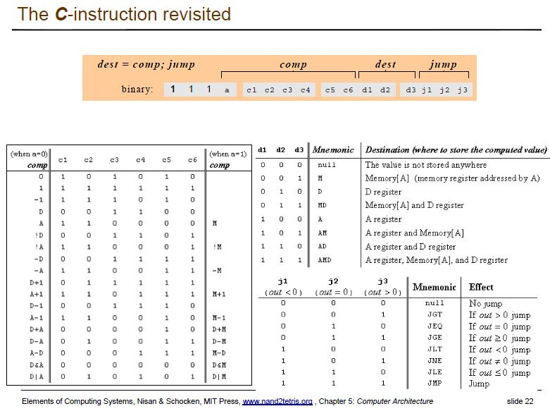

前言
編輯小語
最近小編發現了一個很棒的網路公開課，是 coursera 課程網站上的 From Nand to Tetris / Part I 這門課，於是我去修了這門課並作了習題，這是我真正修習的第一門網路公開課。
這門課程是教授學生如何從一個最基礎的 nand 邏輯閘開始，一路往上建構出所有基礎元件，像是 and, or, xor, not, MUX, DMUX, Adder, Memory 等等，接著建構出 CPU 與整台電腦，然後再學習如何在建構出這台電腦上的『組譯器、編譯器、作業系統』等等，最後在這個具備軟硬體的電腦上寫一個小型的方塊遊戲。
我覺得這門課非常棒，因此小編將整個修課的過程與心得分享給大家，也利用這個機會將這門『神級課程』介紹給大家認識。
---- （「少年科技人雜誌」與「程式人雜誌」編輯 - 陳鍾誠）
授權聲明
本雜誌許多資料修改自維基百科，採用 創作共用：姓名標示、相同方式分享 授權，若您想要修改本書產生衍生著作時，至少應該遵守下列授權條件：
- 標示原作者姓名 (包含該文章作者，若有來自維基百科的部份也請一併標示)。
- 採用 創作共用：姓名標示、相同方式分享 的方式公開衍生著作。
另外、當本雜誌中有文章或素材並非採用 姓名標示、相同方式分享 時，將會在該文章或素材後面標示其授權，此時該文章將以該標示的方式授權釋出，請修改者注意這些授權標示，以避免產生侵權糾紛。
例如有些文章可能不希望被作為「商業性使用」，此時就可能會採用創作共用：[姓名標示、非商業性、相同方式分享] 的授權，此時您就不應當將該文章用於商業用途上。
最後、懇請勿移除公益捐贈的相關描述，以便讓愛心得以持續散播！
在本期雜誌中，我們還使用了 nand2tetris 課程中的大量習題與程式，這些習題乃是教科書 "The Elements of Computing Systems", by Nisan and Schocken, MIT Press 的習題，這些習題與程式採用 GNU GPL (General Public License) 授權 ，請務必遵照 GPL 的授權使用這些內容，以避免發生侵權事件。
另外、本期內容中某些截圖來自 nand2tetris 投影片 ，該文件並未聲明採用何種授權，使用時請注意這點，避免侵權。 在此我們僅按著作權法中的合理使用原則，擷取幾張圖片，若您是該作品擁有者且認為此擷取行為不妥，請告訴我們，我們會配合移除。
本期焦點： Nand2Tetris 慕課記 -- 從邏輯閘到方塊遊戲
慕課記 -- Nand2Tetris 這門課
慕課 MOOC 是什麼？
Massive open online course 簡稱 MOOC ，這是一個從 2008 年 Dave Cormier 提出來的新名詞，其內涵是運用網路技術讓大家可以共同學習一門課程，我們曾經在下列的程式人雜誌文章當中介紹過這個主題。
MOOC 這個名詞在台灣通常翻譯成『磨課師』，而在中國則翻譯成『慕課』，我本身比較喜歡『慕課』這個譯法。因為『慕課』感覺就像『很羨慕的來上課』的樣子，而『磨課師』則要由老師磨來磨去，聽起來就不太開心。
目前、全世界最大型的 MOOC 網站，應該是 Coursera 、 Udacity 和 edX 了，這三個網站的風格不太相同，其中的 Coursera 和 Udacity 源自於史丹佛大學 (Stanford University)，而 edX 則來自麻省理工 MIT。
Coursera 是由史丹佛大學的計算機科學教授吳恩達 （Andrew Ng） 和 Daphne Koller 聯合創建的，目前台灣大學也有一些課程在 Coursera 開設，像是葉丙成老師的機率，還有呂世浩老師的秦始皇等等，都是相當受歡迎的課程。
令人心動的 From Nand to Tetris 課程
雖然我經常上這些網站看看資料和影片，但是卻從來沒有完整的修完過一門課程。 之前曾經聽說過真正修課和光是看看，會有很不一樣的感受，於是在看到下列這門非常讓我心動的課程之後，我決定要從頭到尾修完這門課。
- 課程： From Nand to Tetris / Part I, by Shimon Schocken, Noam Nisan
為甚麼這門課會讓我心動呢？ 原因是在一年前我就曾看到過下列這個網站，知道 nand2tetris 這門課程是教授學生如何從一個最基礎的 nand 邏輯閘開始，一路往上建構出所有基礎元件，像是 and, or, xor, not, MUX, DMUX, Adder, Memory 等等，接著建構出 CPU 與整台電腦，然後再學習如何在建構出這台電腦上的『組譯器、編譯器、作業系統』等等，最後在這個具備軟硬體的電腦上寫一個小型的方塊遊戲。
- Nand2tetris 網站： http://nand2tetris.org/
這樣的『神級課程』，又怎麼能讓學電腦技術的人不心動呢？
下圖顯示了 From Nand to Tetris 這門課程的架構，大約就是一路從上層的『編譯器與作業系統』開始，經過『虛擬機、組譯器、機器語言』，然後開始拆解整個硬體，從 CPU 一路拆解到邏輯閘。
圖、nand2tetris 整門課的基本架構
但是學習的時候，則是從下層邏輯閘一路建構上來，每一步都是透過寫程式的方式自己動手做，其中包含撰寫硬體描述語言 (HDL) ，組合語言 (ASM) 與高階語言 (java) 等等，真的是涵蓋非常完整的一門課。
當然，一門涵蓋這麼廣的課程必須要有所取捨， Nand2tetris 既然採用了簡化並實作的概念，就無法在理論上著墨太多，也無法在實作上採用太過深入的技巧，因此高深的理論和複雜的實作都被捨去了。
這種取向正好是我所最想要的，因為我本身從大學一路念到博士班，不知修過幾次『計算機結構』與『作業系統』的課程，但是卻沒有設計過任何一顆處理器和作業系統，於是課本上的那些理論根本就是空談，只知道電腦一直加快取就會讓速度變快，而且還很會計算電腦效能的數學公式，但是我卻一顆 CPU 都沒設計過，一個作業系統沒寫過。
所以在這幾年，我開始用 verilog 設計處理器，並且用 C, JavaScript 等語言撰寫『編譯器，組譯器，虛擬機』等等程式，還因此寫了以下列出的一本紙本書和一堆電子書，其實就是為了完成『從頭到尾』設計一台電腦的這個夢想，我將這個夢想稱為『開放電腦計劃』。
現在，有了 Nand2tetris ，基本上這個團隊已經完成了我的夢想，我只要好好的去上課把它學起來就行了，那我又怎麼能不花時間去把這門課修好呢？
開始修課吧！
您只要按下 From Nand to Tetris / Part I 這個連結，就可以進到課程首頁，您必須先申請 coursera 的賬號之後，才能開始選修課程，這門課是免費的，因此您只要登入後在頁面中按下 join for free 按鈕就可以開始上課了。
如果您的帳號設定是中文，那麼看到的課程名稱會是『從與非門到俄羅斯方塊 / 第1部分』，這個翻譯我覺得怪怪的，因此建議您還是到設定中選回英文設定會比較好。
這個 Part I 的課程共分成七部分，如下所示。
0. From Nand to Tetris
1. Boolean Functions
2. Boolean Arithmetic
3. Memory
4. Machine Language
5. Computer Architecture
6. Assembler想必之後還會有 Part II 是從『虛擬機，編譯器，作業系統』到『方塊遊戲』的，如果您想先睹為快，那也可以連到下列 nand2tetris 的網址去看看。
- From NAND to Tetris : Course -- http://www.nand2tetris.org/course.php
Part II 應該會有下列主題。
7. VM I: Stack Arithmetic
8. VM II: Program Control
9. High-Level Language Project
10. Compiler I: Syntax Analysis Project
11. Compiler II: Code Generation Project
12. Operating System現在，就讓我們一起來學習這門課程吧！
Nand2Tetris 第 0 週 -- 課程簡介與的軟體安裝
課程簡介
From Nand to Tetris / Part I 這門課總共有七週，分為第 0 週到第 6 週，第 0 週的內容是課程簡介和軟體安裝，真正的實作還是從第 1 週開始的。
您可以從 nand2tetris 的網站上取得大部份的教材以及全部的軟體，即使沒有購買教科書，應該也不會有太大問題才對！
教材與投影片的網址如下。
其中包含 lecture 投影片，習題 project 1..12 ，以及教科書的 1..6 章與附錄 Ａ，這些內容至少可以讓我們修完 From Nand to Tetris / Part I 了。
如果您真的想學習這門課，一定要動手做習題，因為這是整門課最精彩的一部分。
軟體安裝
要能完成這些習題，我們必須安裝 Nand2Tetris 專門為課程所設計的軟體，包含 Hardware Simulator, CPU Emulator, VM Emulator, Assembler, Compiler, Operating system, Text Comparer 等等，您可以從以下網址取得這些以 GPL 方式授權的開放原始碼軟體。
其中 Hardware Simulator, CPU Emulator, VM Emulator, Assembler 等軟體是有圖形化界面的，而 Compiler, Operating system, Text Comparer 則是命令列程式。
您可以點選其中的 Download the Nand2tetris Software Suite 連結下載所有程式，下載後會發現是一個名為 nand2tetris.zip 的壓縮檔，解開後會得到 tools 與 projects 等兩個資料夾，其中的 tools 裡包含了所有的工具軟體，在 Part I 裡我們需要使用 HardwareSimulator , CPUEmulator 等兩個工具。
nqu-192-168-61-142:nand2tetris mac020$ cd tools
nqu-192-168-61-142:tools mac020$ ls
Assembler.bat JackCompiler.bat VMEmulator.sh
Assembler.sh JackCompiler.sh bin
CPUEmulator.bat OS builtInChips
CPUEmulator.sh TextComparer.bat builtInVMCode
HardwareSimulator.bat TextComparer.sh
HardwareSimulator.sh VMEmulator.batHardwareSimulator 是用來測試我們所寫的『 HDL 硬體描述語言』所使用的，此處的『硬體描述語言』 並不是常見的 Verilog 或 VHDL，而是 nand2tetris 團隊所設計出來的『簡易陽春版 HDL』，稱為 HackHDL 。
講到這裡，勢必有人會覺得幹嘛要用這種『陽春版HDL 』，而不用專業的 Verilog 或 VHDL 呢？
原本我也有這種想法，但是真正開始做習題之後，才發現這是非常棒的一種做法！
因為『陽春版HDL 』沒有那些高級的 if, for, always 等等語法，只能用元件與線路連接的方式來寫，因此強迫我們必須從頭到尾自己重做一遍，這樣就能很清楚每個元件的原理與設計方法，而不是用一些神奇的語法掩蓋了某些知識上的盲點。
所以，即使您已經會了 Verilog 或 VHDL ，也請耐住性子，退化到最原始的狀態，開始來細細品味這種『陽春版HDL 』的好處，強迫自己重新瞭解數位電路的設計原理。
上述的軟體幾乎 100% 都是用 java 寫的，因此您必須安裝 Java JDK 才能執行這些程式，您可以從下列 Java 的官方網站取得符合您作業系統與處理器的 JDK 軟體來安裝。
在前面幾週的課程，您主要會用到 HardwareSimulator 來測試寫出來的 HDL 硬體描述檔，HardwareSimulator 的用法可以參考下列的使用手冊。
當您安裝完 JDK 之後，在 windows 底下只需要在對應的 .bat 程式上按兩下就可以啓動該程式了，至於 Linux/Mac 則必須要將 .sh 檔的權限修改為可執行 (chmod 777 <filename>) 之後在打入該 .sh 檔名稱去執行它。
至於另一個 projects 資料夾，則是 nand2tetris 為您準備好的習題框架，舉例而言，在 projests/01/And16.hdl 檔案當中的內容如下所示。
// This file is part of www.nand2tetris.org
// and the book "The Elements of Computing Systems"
// by Nisan and Schocken, MIT Press.
// File name: projects/01/And16.hdl
/**
* 16-bit bitwise And:
* for i = 0..15: out[i] = (a[i] and b[i])
*/
CHIP And16 {
IN a[16], b[16];
OUT out[16];
PARTS:
// Put your code here:
}您必須在 // Put your code here: 那行後面開始填入程式，用 nand2tetris 的 HDL 語法來設計出 16 位元的 And16 元件，符合描述中所說的下列條件。
for i = 0..15: out[i] = (a[i] and b[i])雖然第 0 週還沒教我們如何設計電腦硬體，但是為了讓大家都能習慣這些開發工具，老師還是出了一個很簡單的習題，就是要求我們要將位於 nand2tetris/projects/01/ 這個路徑中的 xor.hdl 檔案上傳，以便確定學員都已經下載軟體並且知道如何上傳作業了，該檔案的內容如下。
// This file is part of www.nand2tetris.org
// and the book "The Elements of Computing Systems"
// by Nisan and Schocken, MIT Press.
/**
* Exclusive-or gate: out = !(a == b).
*/
CHIP Xor {
IN a, b;
OUT out;
PARTS:
Nand (a=a, b=b, out= AnandB);
Or (a=a, b=b, out= AorB);
And (a=AnandB, b=AorB, out=out);
}當您準備好這些軟體，並且看完本週的影片之後，就可以前進到第 1 週了。
對了，本來我打算在這期雜誌中將我寫的作業內容放上來，但是後來發現 http://www.nand2tetris.org/terms.php 這個網頁中有寫下列這段聲明：
Code Posting Policy
Therefore, we request that you don't post solutions publicly on the web, e.g. in blogs or forums. If your course instructor or organizer creates a private space in which work can be shared outside the public domain, that's fine. Likewise, you can share your work with others using a password-protected space, if it's permitted by the specific course in which you are enrolled.因此我決定遵守 nand2tetris 的要求，不要把解答放上網，讓大家自己去體會學習與設計的樂趣，我想這樣應該會學得更好。
我想，我就是給學生太多答案了，所以很多學生都沒學好。
學習，應該就像這樣，自己去探索出答案，才能真正享受學習的過程，並且徹底學會這些知識。
下次，我也要改成這樣做！
Nand2Tetris 第 1 週 -- 布林函數
電腦的基本結構
在 2014 年 10 月份的 少年科技人雜誌第一期:電腦的歷史、工業與結構 內容中，我們曾經介紹過 透視電腦的內部結構 這個主題。
從該文中我們看到了電腦的基本結構如下：
圖、電腦的基本結構 -- 馮紐曼架構
該架構中的核心是處理器，而處理器本身又是一個與馮紐曼架構類似的微型結構。
圖、處理器 (CPU) 的基本結構
上述的結構是由很多大尺度的構件所組成的，但是在微觀的尺度上，這些構件可以由更細微的『邏輯閘』所組成，以下是一些常見的邏輯閘。


在上述這些邏輯閘中，NAND 元件具有全能性，也就是其它邏輯閘都可以由一群 NAND 所組合而成，因此我們只需要很多的 NAND 閘，就可以建構出所有其他的邏輯閘，然後再進一步組合出所有的數位電路，一路向上建構出處理器與電腦。
而 Nand to Tetris 這個名稱的意義，也就是企圖從 NAND 元件開始，一路向上建構出整台電腦，然後開始寫出組譯器，編譯器，虛擬機，作業系統等軟件，最後在這些系統軟件的基礎上撰寫一些方塊遊戲，像是俄羅斯方塊等等。
如何設計電腦
Shimon Schocken 與 Noam Nisan 兩位教授應該是希望透過這樣一個從下到上的完整建構過程，讓學生能夠徹底的瞭解電腦的設計原理，並且能自己動手設計出一台電腦。
接著，且讓我用自問自答的方式，來唱一段雙簧！
- 問題是，組合出一顆處理器需要多少閘呢？
這個問題的答案是，數百萬個邏輯閘才能組合出一顆處理器。
- 這樣的話，我們花一輩子都可能組不出來啊？那我們要怎麼開始呢？
現在設計處理器，已經不需要用手來組裝邏輯閘了，因為我們有更好的方式，那個方式就是寫程式來設計電腦。
- 寫程式來設計電腦，那要用什麼程式語言呢？
這種用來設計電腦硬體的語言，統稱為『硬體描述語言』(Hardware Description Language, HDL)，目前最常用的硬體描述語言有兩種，分別是 VHDL 與 Verilog。
- 那在這一門課裡，我們是用哪種硬體描述語言呢？是 VHDL 還是 Verilog 呢？
這個問題的答案是，兩者都不是。
這門課的硬體描述語言也是由老師他們的團隊自製的小型 HDL，名稱為 HackHDL。
- HackHDL 和 VHDL, Verilog 有差別嗎？差別在哪裡呢？
有差別，HackHDL的功能非常陽春，只能採用元件和拉線的方式來設計，沒有 VHDL, Verilog 當中的流程式寫法，所以也不支援 if, else, case, always, initial 等語法。
- 為什麼要採用這麼陽春的工具，這對我們的學習是不是會有負面影響？
依我的經驗是，這對學習有正面影響，因為 HackHDL 強迫你要用接線的方式設計硬體，不能採用那種高階寫法，因此更很扎實地瞭解電腦的設計原理，不會有跳空的情況。
如果採用高階語法，在設計完成後心裡很容易留下一大堆疑問，但採用 HackHDL 則會很有踏實感，因為一切線路都是你扎扎實實設計出來的。
好了，釐清這些疑問之後，我們就可以開始來學習硬體描述語言了。
硬體描述語言
首先，就讓我用一個 Not.hdl 的範例來說明 HackHDL 硬體描述語言的語法吧！
我們可以用 Nand 閘來建構出 Not 閘，只要將 Nand 的兩個輸入都接在一起就行了。Nand 閘有兩個輸入參數 a,b 與一個輸出 out，我們透過下列的 Nand(a=in, b=in, out=out) 語句將 a, b 都接到 in 這條輸入線中，於是 Nand 閘就變成了一個 Not 閘。
CHIP Not {
IN in;
OUT out;
PARTS:
Nand(a=in, b=in, out=out);
}事實上，在 HackHDL 的系統中，早就已經將 Nand 閘內建在裡面了，因此我們不需要額外宣告一個 Nand 閘，不過如果我們真的想自己宣告 Nand 閘的話，也可以採用 BUILTIN 這個語句，這樣就可以接上系統內建的元件了。
CHIP Nand {
IN a, b;
OUT out;
BUILTIN Nand; // 使用內建的 Nand 功能
}但是，您不可以在某元件裡再度以如下的方式引用自己，否則將會因為遞迴執行而導致當機。
CHIP Nand {
IN a, b;
OUT out;
PARTS:
Nand(a=a, b=b, out=out);
}事實上，不止 Nand 元件有預設版本，整個 nand2tetris 習題中的每個作業都有預設版本。當您某個作業寫不出來的時候，系統會用預設的版本代替，這樣就不會讓該作業卡住您的學習，整個學習過程還是可以順利進行。
執行方法
安裝好 java JDK 之後，點選 HardwareSimulator.bat 會出現一個視窗程式，請您先將對應的元件程式寫好，然後執行。
圖、用 HardwareSimulator 載入 And.tst 測試 And.hdl
舉例而言，先寫好上述的 And.hdl 程式之後，點選 File/Load Script 後選擇 And.tst 檔案，接著按下 Run/Run 的功能，系統會使用 And.tst 這個程式對你的 And.hdl 模組進行測試，如果最後下方出現『End of Script - Comparison ended successfully』的話，那就代表您的元件設計通過測試了。
關於 HardwareSimulator 使用方式的更詳細解說，請參考下列圖片與使用手冊！
- Simulating a Xor gate
- Running a test script
- Simulating the topmost Computer chip
- Hardware Simulator Tutorial (PDF)
{kind=link}
{kind=link}
{kind=link}
一旦第一個程式測試成功後，您就可以嘗試用 nand 閘來兜出所有電路了，畢竟 NandToTetrix 這門課程，就是要告訴我們如何從 nand 閘開始建構電路，然後一路向上經過『多工器、記憶體、處理器、組譯器、編譯器、作業系統』，完整的建構出一台具體而微的電腦。
而這也正是為何我要去修這門課的原因，因為我所想做的『開放電腦計畫』， NandToTetrix 已經先做過一遍了！
以下是我們從 nand 開始構建出所有基本電路的過程。
使用 nand 兜出基本邏輯閘
第一章的習題主要是請大家嘗試從 nand 閘開始，一步一步的建構出 Not, And, Or, Xor, Mux, DMux 等單位元的邏輯元件，然後再用很多組這些元件去組成 16 位元的邏輯元件，像是 Not16, And16, Or16, Mux16, Or8Way, Mux4Way16, Mux8Way16, DMux4Way, DMux8Way 等邏輯元件吧！
如果您還不了解各種邏輯閘的定義與功能，可以參考下列文件！
在上述的 Wikipedia:NAND logic 文件當中，詳細的描述了如何用 nand 來建構出 not, and, or 的方法，

圖，用 nand 建構 not 閘
以下是 not 閘的習題，您必須在 // Put your code here: 這行下面將成是碼填入。
CHIP Not {
IN in;
OUT out;
PARTS:
// Put your code here:
}於是筆者將 下列這行填入，就完成了這題作業，不過還是需要用 HardwareSimulator 測試一遍，確定結果正確才行。
Nand(a=in, b=in, out=out);圖，用 nand 建構 and 閘
接著我們如上圖用兩個 nand 閘建構出一個 and 閘，請讀者自行嚐試看看。
CHIP And {
IN a, b;
OUT out;
PARTS:
// Put your code here:
}圖，用 nand 建構 or 閘
有了這些電路圖之後，相信您應該可以很容易地寫出對應的 HackHDL 程式了，以下是我用 nand 建構 or 閘的 HackHDL 程式碼，提供給您參考！
CHIP Or {
IN a, b;
OUT out;
PARTS:
Not(in=a, out=nota);
Not(in=b, out=notb);
Nand(a=nota, b=notb, out=out);
}然後我們可以建構出 xor 閘，題目如下：
CHIP Xor {
IN a, b;
OUT out;
PARTS:
// Put your code here:
}另外，還有一類重要的邏輯元件稱為多工器 (Multiplexer, MUX) ，這種元件可以從很多組輸入裏選擇出指定的那組輸出，以下是一個二選一的多工器圖示與習題。
圖：二選一多功器
CHIP Mux {
IN a, b, sel;
OUT out;
PARTS:
// Put your code here:
}如果把多工器的功能反過來看，就會設計出一種稱為解多工器 DMUX 的元件，習題如下。
CHIP DMux {
IN in, sel;
OUT a, b;
PARTS:
// Put your code here:
}然後我們可以將這些元件的輸入變成 16 位元的，於是就會有下列這些習題。
/**
* 16-bit Not:
* for i=0..15: out[i] = not in[i]
*/
CHIP Not16 {
IN in[16];
OUT out[16];
PARTS:
// Put your code here:
}/**
* 16-bit bitwise And:
* for i = 0..15: out[i] = (a[i] and b[i])
*/
CHIP And16 {
IN a[16], b[16];
OUT out[16];
PARTS:
// Put your code here:
}/**
* 16-bit bitwise Or:
* for i = 0..15 out[i] = (a[i] or b[i])
*/
CHIP Or16 {
IN a[16], b[16];
OUT out[16];
PARTS:
// Put your code here:
}/**
* 16-bit multiplexor:
* for i = 0..15 out[i] = a[i] if sel == 0
* b[i] if sel == 1
*/
CHIP Mux16 {
IN a[16], b[16], sel;
OUT out[16];
PARTS:
// Put your code here:
}當然，也可以設計從更多組輸入選一組的多工器，如下圖所示。
圖：各種多選一的多功器
或者設計更多選擇線的解多工器，以下是一個 1 對 4 解多工器的電路圖，其中用到了解碼器元件 （當然您也可以跳過解碼器直接實作）。
圖：1 對 4 解多工器
/**
* 4-way 16-bit multiplexor:
* out = a if sel == 00
* b if sel == 01
* c if sel == 10
* d if sel == 11
*/
CHIP Mux4Way16 {
IN a[16], b[16], c[16], d[16], sel[2];
OUT out[16];
PARTS:
// Put your code here:
}/**
* 8-way 16-bit multiplexor:
* out = a if sel == 000
* b if sel == 001
* etc.
* h if sel == 111
*/
CHIP Mux8Way16 {
IN a[16], b[16], c[16], d[16],
e[16], f[16], g[16], h[16],
sel[3];
OUT out[16];
PARTS:
// Put your code here:
}/**
* 4-way demultiplexor:
* {a, b, c, d} = {in, 0, 0, 0} if sel == 00
* {0, in, 0, 0} if sel == 01
* {0, 0, in, 0} if sel == 10
* {0, 0, 0, in} if sel == 11
*/
CHIP DMux4Way {
IN in, sel[2];
OUT a, b, c, d;
PARTS:
// Put your code here:
}/**
* 8-way demultiplexor:
* {a, b, c, d, e, f, g, h} = {in, 0, 0, 0, 0, 0, 0, 0} if sel == 000
* {0, in, 0, 0, 0, 0, 0, 0} if sel == 001
* etc.
* {0, 0, 0, 0, 0, 0, 0, in} if sel == 111
*/
CHIP DMux8Way {
IN in, sel[3];
OUT a, b, c, d, e, f, g, h;
PARTS:
// Put your code here:
}還有之後應該會用到的 8 輸入或閘的習題。
/**
* 8-way Or:
* out = (in[0] or in[1] or ... or in[7])
*/
CHIP Or8Way {
IN in[8];
OUT out;
PARTS:
// Put your code here:
}接著，就請上課程網站看看影片，然後把第一週的作業完成吧！
課程網址： https://class.coursera.org/nand2tetris1-001/wiki/week_1
結語
以下是第一週習題的題目網址，請務必盡可能靠自己的能力完成，這樣才能深度理解這些設計的實作方法。
雖然兩位老師請同學不要將解答上傳到公開網路上，但還是有人上傳了，所以如果您真的做不出來或卡住了，還是可以參考一下答案，以下是 havivha 所提供的參考答案！
原本預期我應該可以輕輕鬆鬆的一下就做完了，結果還是花了一整個早上才做完，這門課還真是有點硬阿！
而且，這才是第一週的課程而已。
想必接下來將會有艱苦的挑戰！
Nand2Tetris 第 2 週 -- 布林算術
在第一週的作業中，我們從 nand 開始做出了Not, And, Or, Xor, Mux, DMux 等邏輯元件，並且進一步擴充為 Not16, And16, Or16, Mux16, Or8Way, Mux4Way16, Mux8Way16, DMux4Way, DMux8Way 的版本了。
但是，我們還沒讓電腦可以進行計算，特別是讓電腦作加減法，在這週的課程中，我們主要想做出一個完整的加法器，然後進一步做出 CPU 的心臟 -- 算術邏輯單元。
要做出 16 位元的加法器將兩個 16 位元的二進位數字 a[16],b[16] 相加起來，必須要能先做出 1 位元的二進位加法，這種將兩個位元相加的基礎元件稱為半加器，圖示與習題如下。
圖，半加器 HalfAdder
/**
* Computes the sum of two bits.
*/
CHIP HalfAdder {
IN a, b; // 1-bit inputs
OUT sum, // Right bit of a + b
carry; // Left bit of a + b
PARTS:
// Put you code here:
}但是，要能夠做出 16 位元的加法器，不能夠只拿兩個位元相加，而必須能夠進行三個位元的加法才行（因為可能會有進位）。因此我們需要能做三個位元相加的 FullAdder，以下是其電路圖與習題。
圖，全加器 FullAdder 的詳細電路
/**
* Computes the sum of three bits.
*/
CHIP FullAdder {
IN a, b, c; // 1-bit inputs
OUT sum, // Right bit of a + b + c
carry; // Left bit of a + b + c
PARTS:
// Put you code here:
}一旦我們設計出一個元件之後，就可以用方塊的方式表示它，只要將輸入輸出線拉出來就行了，以下是全加器的方塊圖。
圖，全加器 FullAdder 的圖示
接著，我們可以串接很多個全加器，形成任意位數的加法器，以下是串接四個全加器所形成的四位元加法器。
圖，用四個全加器建構出四位元加法器
當然，我們也可以做出更多位元的加法器，在以下習題裏就要求我們做出 16 位元的加法器。
/**
* Adds two 16-bit values.
* The most significant carry bit is ignored.
*/
CHIP Add16 {
IN a[16], b[16];
OUT out[16];
PARTS:
// Put you code here:
}一旦你做出了 16 位元的加法器，那就可以輕易的做出 16 位元的遞增器 Inc16.hdl
/**
* 16-bit incrementer:
* out = in + 1 (arithmetic addition)
*/
CHIP Inc16 {
IN in[16];
OUT out[16];
PARTS:
// Put you code here:
}然後就是本章的重頭戲，運用這兩章的元件做出一個完整的算術邏輯單元，其功能要求與作業內容如下。
/**
* The ALU (Arithmetic Logic Unit).
* Computes one of the following functions:
* x+y, x-y, y-x, 0, 1, -1, x, y, -x, -y, !x, !y,
* x+1, y+1, x-1, y-1, x&y, x|y on two 16-bit inputs,
* according to 6 input bits denoted zx,nx,zy,ny,f,no.
* In addition, the ALU computes two 1-bit outputs:
* if the ALU output == 0, zr is set to 1; otherwise zr is set to 0;
* if the ALU output < 0, ng is set to 1; otherwise ng is set to 0.
*/
// Implementation: the ALU logic manipulates the x and y inputs
// and operates on the resulting values, as follows:
// if (zx == 1) set x = 0 // 16-bit constant
// if (nx == 1) set x = !x // bitwise not
// if (zy == 1) set y = 0 // 16-bit constant
// if (ny == 1) set y = !y // bitwise not
// if (f == 1) set out = x + y // integer 2's complement addition
// if (f == 0) set out = x & y // bitwise and
// if (no == 1) set out = !out // bitwise not
// if (out == 0) set zr = 1
// if (out < 0) set ng = 1
CHIP ALU {
IN
x[16], y[16], // 16-bit inputs
zx, // zero the x input?
nx, // negate the x input?
zy, // zero the y input?
ny, // negate the y input?
f, // compute out = x + y (if 1) or x & y (if 0)
no; // negate the out output?
OUT
out[16], // 16-bit output
zr, // 1 if (out == 0), 0 otherwise
ng; // 1 if (out < 0), 0 otherwise
PARTS:
// Put you code here:
}這個 ALU 將會是 HackCPU 處理器的心臟，也可以說是這門課最重要的一個元件了。
注意事項
但是，在實作之前建議各位先閱讀一下 Nand2tetris 課程提供的 HDL Survival Guide 文件，這對您會很有幫助。
其中有幾點要注意的，筆者在此先提醒大家。
首先是 HackHDL 的輸入裏不能使用 0, 1, 但是可以使用 false, true ，其中的 true 代表一個全數為 1 的真值，傳入陣列輸入的話，就會變成 11111.... ，而 false 則代表 00000.....
注意下列範例，您可以將某些線路分別輸出或輸入
另外，我們可以用 a[4..11] 這樣的語法取出或設定 a 中第 4 到 11 位元的內容，如果是像 Or8Way (in=notIn[4..11], out=out) 這樣的語句，那就是將 notIn[4..11] 共 8 個位元取出傳入 in 線路當中，但是如果用 Something16(in=in, out[4..11]=notIn) 這樣的語句，則是將 notIn 傳入到 out[4..11] 線路當中，兩者的意義是很不相同的，以下是 HDL Survival Guide 裏節錄的一段說明，提供給讀者參考。
Sub-busing can only be used on buses that are named in the IN and OUT statements of an HDL file, or inputs and outputs of the chip-parts used in the PARTS section. If you need a sub-bus of an internal bus, you must create the narrower bus as an output from a chip-part. For example:
CHIP Foo {
IN in[16];
OUT out;
PARTS:
Something16 (in=in, out=notIn);
Or8Way (in=notIn[4..11], out=out);
}
This implementation causes an error on the Or8Way statement. This needs to be coded as:
Something16 (in=in, out[4..11]=notIn);
Or8Way (in=notIn, out=out);
Multiple Outputs
Sometimes you need more than one sub-bus connected to the output of a chip-part. Simply add more than one out= connection to the chip-part definition.
CHIP Foo {
IN in[16];
OUT out[8];
PARTS:
Not16 (in=in, out[0..7]=low8, out[8..15]=high8);
Something8 (a=low8, b=high8, out=out);
}
This also works if you want to use an output of a chip in further computations.
CHIP Foo {
IN a, b, c;
OUT out1, out2;
PARTS:
Something (a=a, b=b, out=x, out=out1);
Whatever (a=x, b=c, out=out2);
}結語
現在建議您可以上去看看影片並且實作第二週的習題了，以下是課程網址。
課程網址： https://class.coursera.org/nand2tetris1-001/wiki/week_2
以下是第二週習題的題目網址，請務必盡可能靠自己的能力完成，這樣才能深度理解這些設計的實作方法。
雖然兩位老師請同學不要將解答上傳到公開網路上，但還是有人上傳了，所以如果您真的做不出來或卡住了，還是可以參考一下答案，以下是 havivha 所提供的參考答案！
筆者經過半天的奮戰，終於把第二週的功課做完了！
由於對 Nand2tetris 課程的 HDL 的語法不瞭解，還著實吃了一些苦頭，除錯了很久！
雖然如此， Nand2tetris 已經做得很好了，這些時間花得還是很值得！
Nand2Tetris 第 3 週 -- 記憶體
雖然 nand2tetris 第二週已經教到了加法器與 ALU 等有點複雜度的元件之設計，但是卻還留下了一類關鍵性元件還沒有實作，那就是記憶性元件。
第三週的重點是記憶體的設計，課程會從一位元的記憶體開始實作，之後擴大為 16 位元暫存器。接著做出容量大小分別為 8, 64, 512, 4K, 16K 的記憶體。
一位元的記憶體是由正反器所構成的，而正反器又是由閂鎖器組合成的，以下是一種由NAND 閘組成的閂鎖器 (Latch)。
圖：以 NAND 閘組成閂鎖器
上述閂鎖器是由兩個 NAND 互相回饋的線路所組成，這種線路可以將一個位元鎖在裡面，然後又可以透過剩下的兩條輸入線進行設定或清除的動作，其真值表與圖示如下。
圖：NAND 閂鎖器的真值表與圖示
但是上述這種閂鎖器並不好用，因為有些不允許的狀況會出現，因此我們會用兩個閂鎖器組合成有 enable 的 D 型閂鎖器如下。
圖：有 Enable 的 D 型 NAND 閂鎖器的真值表與圖示
然後為了加上時脈控制的 clock 訊號，再用兩個 D 型閂鎖器組合成正反器。
圖：有 clock 的 D 型正反器
這種正反器就可以用來儲存一個位元，並且有良好的可控制性。
您可以參考以下文件以便進一步瞭解以有關閂鎖器與正反器的技術內容。
有了一個位元的儲存器，就可以一路擴充上去，建構出 16 位元的暫存器，然後形成暫存器群。
Nand2tetris 課程內建了 D 型的正反器元件，稱為 DFF，您可以透過 DFF 來組成一位元記憶體，而不需要從 NAND 開始建構。
於是我們可以用 DFF 來建構可以儲存 1 位元的容器，習題如下：
/**
* 1-bit register:
* If load[t] == 1 then out[t+1] = in[t]
* else out does not change (out[t+1] = out[t])
*/
CHIP Bit {
IN in, load;
OUT out;
PARTS:
// Put your code here:
}
接著就可以用 16 的 Bit 做出 16 位元暫存器。
/**
* 16-bit register:
* If load[t] == 1 then out[t+1] = in[t]
* else out does not change
*/
CHIP Register {
IN in[16], load;
OUT out[16];
PARTS:
// Put your code here:
}接著搭配第一週設計的多工器 (MUX) 與解多工器 (DMUX)，就可以控制很多記憶單元，做出容量大小分別為 8, 64, 512, 4K, 16K 的記憶體了。
/**
* Memory of 8 registers, each 16 bit-wide. Out holds the value
* stored at the memory location specified by address. If load==1, then
* the in value is loaded into the memory location specified by address
* (the loaded value will be emitted to out from the next time step onward).
*/
CHIP RAM8 {
IN in[16], load, address[3];
OUT out[16];
PARTS:
// Put your code here:
}/**
* Memory of 64 registers, each 16 bit-wide. Out holds the value
* stored at the memory location specified by address. If load==1, then
* the in value is loaded into the memory location specified by address
* (the loaded value will be emitted to out from the next time step onward).
*/
CHIP RAM64 {
IN in[16], load, address[6];
OUT out[16];
PARTS:
// Put your code here:
}/**
* Memory of 512 registers, each 16 bit-wide. Out holds the value
* stored at the memory location specified by address. If load==1, then
* the in value is loaded into the memory location specified by address
* (the loaded value will be emitted to out from the next time step onward).
*/
CHIP RAM512 {
IN in[16], load, address[9];
OUT out[16];
PARTS:
// Put your code here:
}/**
* Memory of 4K registers, each 16 bit-wide. Out holds the value
* stored at the memory location specified by address. If load==1, then
* the in value is loaded into the memory location specified by address
* (the loaded value will be emitted to out from the next time step onward).
*/
CHIP RAM4K {
IN in[16], load, address[12];
OUT out[16];
PARTS:
// Put your code here:
}/**
* Memory of 16K registers, each 16 bit-wide. Out holds the value
* stored at the memory location specified by address. If load==1, then
* the in value is loaded into the memory location specified by address
* (the loaded value will be emitted to out from the next time step onward).
*/
CHIP RAM16K {
IN in[16], load, address[14];
OUT out[16];
PARTS:
// Put your code here:
}現在建議您可以上去看看影片並且實作第三週的習題了，以下是課程網址。
課程網址： https://class.coursera.org/nand2tetris1-001/wiki/week_3
以下是第二週習題的題目網址，請務必盡可能靠自己的能力完成，這樣才能深度理解這些設計的實作方法。
雖然兩位老師請同學不要將解答上傳到公開網路上，但還是有人上傳了，所以如果您真的做不出來或卡住了，還是可以參考一下答案，以下是 havivha 所提供的參考答案！
接著就該由您來建構出各種大小的記憶體了。
Nand2Tetris 第 4 週 -- 機器語言
從第四週開始，您必須要學習撰寫 HackCPU 處理器組合語言 （HackCPU 處理器就是 nand2tetris 要你在作業中實作的那顆）， 此時您就必須開始使用 CPUEmulator 這個程式來測試您所撰寫的組合語言，並觀察這些組合語言是如何被轉換為機器碼的。
授權聲明： 本文的截圖來自 nand2tetris 第四章投影片 ，該文並非採用創作共用授權，使用時請注意這點，避免侵權。 在此我們僅按著作權法中的合理使用原則，擷取幾張圖片，若您是該作品擁有者且認為此擷取行為不妥，請告訴我們，我們會配合移除。
HackCPU 的組合語言
那麼， HackCPU 的組合語言到底長什麼樣子呢？ 以下是我們從 nand2tetris 第四章投影片 中抽取出來的一個範例，這個 HackCPU 組合語言可以用來計算 1+2+...+10。
// Adds 1+...+10.
@i // i refers to some RAM location
M=1 // i=1
@sum // sum refers to some RAM location
M=0 // sum=0
(LOOP)
@i
D=M // D = i
@10
D=D-A // D = i - 10
@END
D;JGT // If (i-100) > 0 goto END
@i
D=M // D = i
@sum
M=D+M // sum += i
@i
M=M+1 // i++
@LOOP
0;JMP // Got LOOP
(END)
@END
0;JMP // Infinite loop指令格式與寫法
Nand2tetris 課程所要求要設計的處理器稱為 HackCPU，HackCPU 的有兩種型態的指令，第一種是 A 型態的指令，用來指定某個記憶體位址， A 型指令的寫法是由 @ 符號開頭的，如下所示：
@value // 代表 A=value第二種型態的指令是 C 型指令，通常用來進行運算 (Computation, C)，其指令格式如下， C 型指令包含了 compute, dest, jump 等欄位。
其中的 A 指令會改變 A 暫存器，並以 A 為位址將讀出資料 M 。
而比較複雜 C 型指令則是做運算，根據 compute, dest, jump 欄位內容不同會進行不同的動作，這些動作總結如下。
範例
接著讓我們看一些 HackCPU 的指令範例，以便進一步瞭解其組合語言的寫法。
範例一： if (3-5 ==0) goto 100 else goto 200
@3 // A = 3
D = M // D = M = memory[A] = memory[3]
@5 // A = 5
D = D-A // D = D-5
@100 // A = 100
D; JEQ // if (D==0) goto 100 ; goto 會跳到 A 暫存器的位址。
@200 // A = 200
0; JMP // goto 200只要看懂這些組合語言程式，應該就可以開始寫習題了。
符號與記憶體映射
為了讓寫程式更方便，HackCPU 的組合語言裏定義了一些符號，可以讓撰寫者引用。其中 R0 .. R15 分別代表記憶體位址 0 .. 15，另外 SCREEN 代表位址 16384，這是螢幕記憶體映射區的開頭。而 KBD 代表位址 24576 ，這是鍵盤碼的記憶體映射位址。
以下是 Hack Computer 的記憶體映射圖，透過這樣的映射，您可以用 HackCPU 的組合語言取得鍵盤輸入，或者在螢幕上繪製圖形與文字。
圖、Hack 電腦的記憶體映射圖
第四週習題
本週習題主要是要求學員撰寫兩個 HackCPU 的組合語言程式，第一個稱為 Fill.asm，功能是在有任何按鍵被按下時，能夠讓螢幕變成黑色的，如果沒有任何按鍵被按下的話，那螢幕就是白色的。
習題： Fill.asm
// Runs an infinite loop that listens to the keyboard input.
// When a key is pressed (any key), the program blackens the screen,
// i.e. writes "black" in every pixel. When no key is pressed, the
// program clears the screen, i.e. writes "white" in every pixel.
// Put your code here.第二個作業是要寫出可以進行兩數相乘功能的 mult.asm 組合語言，這個習題設計的目的是讓原本不支援乘法功能的 HackCPU ，也可以透過組合語言的擴充函數，進行乘法計算，這種函數通常也是作業系統的一部分。
習題： Mult.asm
// Multiplies R0 and R1 and stores the result in R2.
// (R0, R1, R2 refer to RAM[0], RAM[1], and RAM[2], respectively.)
// Put your code here.現在建議您可以上去看看影片並且實作第四週的習題了，以下是課程網址。
課程網址： https://class.coursera.org/nand2tetris1-001/wiki/week_4
以下是第四週習題的題目網址，請務必盡可能靠自己的能力完成，這樣才能深度理解這些設計的實作方法。
雖然兩位老師請同學不要將解答上傳到公開網路上，但還是有人上傳了，所以如果您真的做不出來或卡住了，還是可以參考一下答案，以下是 havivha 所提供的參考答案！
寫好之後，您可以用 CPUEmulator 這個程式進行測試，看看自己的執行結果是否正確。
關於 CPUEmulator 的用法請參考下列文件。
希望大家都能順利完成作業囉！ Good Luck !
Nand2Tetris 第 5 週 -- 計算機結構
授權聲明： 本文的截圖來自 nand2tetris 第五章投影片 ，該文並未聲明授權方式，使用時請注意這點，避免侵權。 在此我們僅按著作權法中的合理使用原則，擷取幾張圖片，若您是該作品擁有者且認為此擷取行為不妥，請告訴我們，我們會配合移除。
在第四週的課程中，我們學會了 HackCPU 的組合語言。
一旦瞭解了組合語言之後，我們就可以從指令集開始，設計處理器了。
到目前為止，我們已經實作了『基本邏輯閘，多工與解多工器，加法器，ALU，暫存器，記憶體』等元件了，而這週是整個硬體課程的重頭戲，要實作出 HackCPU 處理器與整台 HackComputer 電腦，以下是我們這幾週的習題列表。

圖、Nand2tetris Part I 硬體部份的所有專案
我們在這週必須根據下列的電路圖，用 HackHDL 硬體描述語言設計出 HackCPU，其中應該會運用到之前設計的很多元件，像是『ALU，暫存器，多工器』等等。
圖、HackCPU 處理器的電路圖
您必須在下列 CPU.hdl 模組中，實作上述的電路圖，並且用 HardwareEmulator 軟體進行測試。
一旦通過測試，那就非常恭喜您！ 您已經學會如何親手打造一顆 CPU 處理器了，這可是非常重要的一步阿！
CHIP CPU {
IN inM[16], // M value input (M = contents of RAM[A])
instruction[16], // Instruction for execution
reset; // Signals whether to re-start the current
// program (reset==1) or continue executing
// the current program (reset==0).
OUT outM[16], // M value output
writeM, // Write to M?
addressM[15], // Address in data memory (of M)
pc[15]; // address of next instruction
PARTS:
// Put your code here:
}只有處理器的電腦基本上很難直接使用，因為我們需要加上記憶體才能儲存較大量資料並且進行輸出入動作。所以接下來請為 HackComputer 加上記憶體。
HackComputer 包含『指令記憶體、資料記憶體和輸出入記憶體』等三部份，以下圖片顯示了 HackCPU 與記憶體的連接方式。
圖、HackCPU 與記憶體的連接方式
接著，只要將 Screen 與 Keyboard 兩塊記憶體連上去，那麼整台電腦就實作完成了。
圖、HackComputer 的記憶體映射圖
理解了這個架構之後，您就可以為 HackComputer 設計出記憶體了。
CHIP Memory {
IN in[16], load, address[15];
OUT out[16];
PARTS:
// Put your code here:
}接著就請完成整個硬體部份的最終目標，一台完整的 HackComputer 電腦了。
CHIP Computer {
IN reset;
PARTS:
// Put your code here:
}只要做完這些，您對電腦硬體就可以從上到下全部貫通了，這能不令人感到激動嗎？
以下是第五週習題的題目網址，請務必盡可能靠自己的能力完成，這樣才能深度理解這些設計的實作方法。
雖然兩位老師請同學不要將解答上傳到公開網路上，但還是有人上傳了，所以如果您真的做不出來或卡住了，還是可以參考一下答案，以下是 havivha 所提供的參考答案！
經過了幾天的奮戰，我終於從 nand 閘開始，一路往上經過 and, or, xor, mux, dmux, adder, ALU, bit, register, ram8, ram64, ram512, ram4k, ram16k, memory, CPU 之後，完成了一台完整的 HackComputer 電腦，真是令人太感動了！
接下來，就是軟體部分了，Nand2tetris 課程將帶領我們一路從組譯器，虛擬機，編譯器，作業系統，然後建構出幾個小遊戲，這真的是太令人期待了啊！
Nand2Tetris 第 6 週 -- 組譯器
假如 HackComputer 只有硬體的話，那麼寫起程式來將會是非常痛苦的，就算你可以用另一台電腦寫程式，然後再上傳到 HackComputer 當中，那麼你所寫的程式很可能會長得像這樣。
0000000000010000 1110111111001000 0000000000010001 1110101010001000
0000000000010000 1111110000010000 0000000000001010 1110010011010000
0000000000010010 1110001100000001 0000000000010000 1111110000010000
0000000000010001 1111000010001000 0000000000010000 1111110111001000
0000000000000100 1110101010000111 0000000000010010 1110101010000111事實上，上述『程式』真的可以在 HackComputer 上執行，這個程式可以計算 1+...+10 的結果，其組合語言如下所示。
// Adds 1+...+10.
@i // i refers to some RAM location
M=1 // i=1
@sum // sum refers to some RAM location
M=0 // sum=0
(LOOP)
@i
D=M // D = i
@10
D=D-A // D = i - 10
@END
D;JGT // If (i-100) > 0 goto END
@i
D=M // D = i
@sum
M=D+M // sum += i
@i
M=M+1 // i++
@LOOP
0;JMP // Got LOOP
(END)
@END
0;JMP // Infinite loop雖然這種組合語言還是不容易閱讀和撰寫，但是總比寫那些 0 與 1 要好得多了。
本週的 nand2tetris 課程作業，就是要你寫出一個組譯器，可以將上述的組合語言轉換成由 0 與 1 組成的二進位機器碼後輸出。
這次的作業，並沒有要求要用哪一種程式語言撰寫，您可以自行選定一種自己熟悉的就行了。
當然，如果能夠用接下來的課程所要發展的 Jack 程式語言的話，那未來就有可能在 HackComputer 上撰寫這種語言了。
不過我沒有這樣做，我選擇了使用 JavaScript 來開發組譯器，寫了一個稱為 ash.js 的組譯器，並且用 io.js 當作執行工具。
以下是用 ash.js 來組譯 sum.asm 的執行過程，您可以清楚地看到組譯器的兩個階段分別做了什麼事情。
nqu-192-168-61-142:n2t mac020$ iojs ash sum
============== pass1 ================
002:0000 @i // i refers to some RAM location
003:0001 M=1 // i=1
004:0002 @sum // sum refers to some RAM location
005:0003 M=0 // sum=0
symbol: LOOP 0004
007:0004 @i
008:0005 D=M // D = i
009:0006 @10
010:0007 D=D-A // D = i - 10
011:0008 @END
012:0009 D;JGT // If (i-100) > 0 goto END
013:0010 @i
014:0011 D=M // D = i
015:0012 @sum
016:0013 M=D+M // sum += i
017:0014 @i
018:0015 M=M+1 // i++
019:0016 @LOOP
020:0017 0;JMP // Got LOOP
symbol: END 0018
022:0018 @END
023:0019 0;JMP // Infinite loop
============== pass2 ================
002:0000000000010000 @i // i refers to some RAM location
003:1110111111001000 M=1 // i=1
004:0000000000010001 @sum // sum refers to some RAM location
005:1110101010001000 M=0 // sum=0
007:0000000000010000 @i
008:1111110000010000 D=M // D = i
009:0000000000001010 @10
010:1110010011010000 D=D-A // D = i - 10
011:0000000000010010 @END
012:1110001100000001 D;JGT // If (i-100) > 0 goto END
013:0000000000010000 @i
014:1111110000010000 D=M // D = i
015:0000000000010001 @sum
016:1111000010001000 M=D+M // sum += i
017:0000000000010000 @i
018:1111110111001000 M=M+1 // i++
019:0000000000000100 @LOOP
020:1110101010000111 0;JMP // Got LOOP
022:0000000000010010 @END
023:1110101010000111 0;JMP // Infinite loop組譯器的第一階段 (pass1) 是要記錄所有符號的記憶體位址，像是上述程式中的 LOOP 與 END 位址分別為 0004 和 0018，這些內容會儲存在一個稱為符號表的結構當中。
為了配合 nand2tetris 不公佈答案的政策，筆者將自己的程式碼內容抽掉，僅留下框架
function parse(line, i) {
// put your code here
}
function addSymbol(symbol) {
// put your code here
}
function pass1(lines) {
// put your code here
}接著就可以在第二階段 (pass2) 當中把每個指令都翻譯成二進位的機器碼，然後輸出到目的黨 *.hack 當中，其方法主要是利用查表的方式查出指令各欄位的對應二進位值，然後填入到最後的二進位碼中就行了。
function pass2(lines, objFile) {
// put your code here
}
function toCode(p) {
// put your code here
}最後，我們在主程式中呼叫上述的兩階段組譯函數，就完成了整個程式的建構。
function assemble(asmFile, objFile) {
var asmText = fs.readFileSync(asmFile, "utf8"); // 讀取檔案到 text 字串中
var lines = asmText.split(/\r?\n/); // 將組合語言分割成一行一行
pass1(lines);
pass2(lines, objFile);
} 接著您可以用上述程式將作業裏給的 Add.asm, Max.asm, Rect.asm, Pong.asm 等程式，組譯成機器碼之後，上傳到課程網站的作業繳交點就可以了。
以下是第六週習題的題目網址，請務必盡可能靠自己的能力完成，這樣才能深度理解這些設計的實作方法。
雖然兩位老師請同學不要將解答上傳到公開網路上，但還是有人上傳了，所以如果您真的做不出來或卡住了，還是可以參考一下答案，以下是 havivha 所提供的參考答案！ (他的組譯器程式是用 Python 寫的）
一旦完成了組譯器之後，我們就可以進入第二階段的課程了。
在第二階段的課程當中，我們將學會『虛擬機，編譯器，作業系統』的設計方式，且讓我們拭目以待！
Nand2Tetris Part I -- 修課感想
雖然我本身就在金門大學的資工系教書，而且也教了好幾次的系統程式和計算機結構，甚至自己也設計了處理器，並寫了組譯器和編譯器等等程式。
但是，在修完這門課之後，仍然感到獲益良多！
除了把原先自己略過的一些主題補完之外，還看到一些很好的教學方法，真的可以說是教學相長。
首先 nand2tetris 這門課從底層開始建構電腦，但是為了避免門檻太高的問題，老師們將整個專案分解成很多段，然後把每一段再分解成一個一個小的程式模組，然後再把這些程式的內容抽掉，但是留下框架。
這樣的做法能夠有效地讓一個大的門檻分解成很多小的樓梯，讓學員能夠循著老師已經建構過一遍的程式軌跡，按步就班地往前走，這讓我想起曾經看過的一張圖片，請點選下列連結檢視之。
在上述圖片中，富二代靠著一堆錢當階梯，結果很容易的就走上了成功之路，但是那些窮二代的人，卻因為沒有這些小階梯，結果被卡在下面上不去。
當老師的，其實就是要幫學生造好階梯，讓他們可以比較順利的一級一級往上走，而不會被太高的門檻卡住。
關於這點，我認為 nand2tetris 的上述做法非常值得參考，未來我也會嘗試著採用這樣的模式來教學。
另外，這門課的 MOOC 經驗也讓我想起了最近看到的一篇文章，連結如下：
- MOOC大海嘯 大學如何因應？, 2015-04-29 天下雜誌
文中認為 MOOC 將會對高等教育造成非常大的衝擊，一門好的 MOOC 課程將會有非常高的價值，這點我從 nand2tetris 的課程中有了深刻的體驗。
但是一門好的 MOOC 課程也將非常需要好的制作能力，這種能力有時需要電影級的投資。
我從 nand2tetris 的課程設計，軟體設計，教材設計，習題設計與影片錄製剪接上，完整的感受到了這種電影級的投資，如果這些努力要換算成金錢的話，我想或許得花上幾千萬到上億台幣。
回頭想想，我還在一個人單打獨鬥的準備教材，連軟硬體都沒錢買。
還好有了網路資源，我也可以站在 nand2tetris 這些好課程的肩膀上，發展出更棒的課程和教材也說不定。
誰說，沒錢就做不到呢？
雜誌訊息
讀者訂閱
程式人雜誌是一個結合「開放原始碼與公益捐款活動」的雜誌，簡稱「開放公益雜誌」。開放公益雜誌本著「讀書做善事、寫書做公益」的精神，我們非常歡迎程式人認養專欄、或者捐出您的網誌，如果您願意成為本雜誌的專欄作家，請加入 程式人雜誌社團 一同共襄盛舉。
我們透過發行這本雜誌，希望讓大家可以讀到想讀的書，學到想學的技術，同時也讓寫作的朋友的作品能產生良好價值 – 那就是讓讀者根據雜誌的價值捐款給慈善團體。 讀雜誌做公益也不需要有壓力，您不需要每讀一本就急著去捐款，您可以讀了十本再捐，或者使用固定的月捐款方式，當成是雜誌訂閱費，或者是季捐款、一年捐一次等都 OK ! 甚至是單純當個讀者我們也都很歡迎！
本雜誌每期參考價：NT 50 元，如果您喜歡本雜誌，請將書款捐贈公益團體。例如可捐贈給「羅慧夫顱顏基金會 彰化銀行(009) 帳號：5234-01-41778-800」。(若匯款要加註可用「程式人雜誌」五個字)
投稿須知
給專欄寫作者： 做公益不需要有壓力。如果您願意撰寫專欄，您可以輕鬆的寫，如果當月的稿件出不來，我們會安排其他稿件上場。
給網誌捐贈者： 如果您沒時間寫專欄或投稿，沒關係，只要將您的網誌以 [創作共用的「姓名標示、非商業性、相同方式分享」授權] 並通知我們，我們會自動從中選取需要的文章進行編輯，放入適當的雜誌當中出刊。
給文章投稿者： 程式人雜誌非常歡迎您加入作者的行列，如果您想撰寫任何文章或投稿，請用 markdown 或 LibreOffice 編輯好您的稿件，並於每個月 25 日前投稿到程式人雜誌社團 的檔案區，我們會盡可能將稿件編入隔月1號出版程式人雜誌當中，也歡迎您到社團中與我們一同討論。
如果您要投稿給程式人雜誌，我們最希望的格式是採用 markdown 的格式撰寫，然後將所有檔按壓縮為 zip 上傳到社團檔案區給我們， 如您想學習 markdown 的撰寫出版方式，可以參考 [看影片學 markdown 編輯出版流程] 一文。
如果您無法採用 markdown 的方式撰寫，也可以直接給我們您的稿件，像是 MS. Word 的 doc 檔或 LibreOffice 的 odt 檔都可以，我們 會將這些稿件改寫為 markdown 之後編入雜誌當中。
參與編輯
您也可以擔任程式人雜誌的編輯，甚至創造一個全新的公益雜誌，我們誠摯的邀請您加入「開放公益出版」的行列，如果您想擔任編輯或創造新雜誌，也歡迎到 程式人雜誌社團 來與我們討論相關事宜。
公益資訊
| 公益團體 | 聯絡資訊 | 服務對象 | 捐款帳號 |
|---|---|---|---|
| 財團法人羅慧夫顱顏基金會 | http://www.nncf.org/ 02-27190408分機 232 |
顱顏患者 (如唇顎裂、小耳症或其他罕見顱顏缺陷） | 銀行：009 彰化銀行民生分行 帳號：5234-01-41778-800 |
| 社團法人台灣省兒童少年成長協會 | http://www.cyga.org/ 04-23058005 |
單親、隔代教養.弱勢及一般家庭之兒童青少年 | 銀行：新光銀行 戶名：台灣省兒童少年成長協會 帳號：103-0912-10-000212-0 |